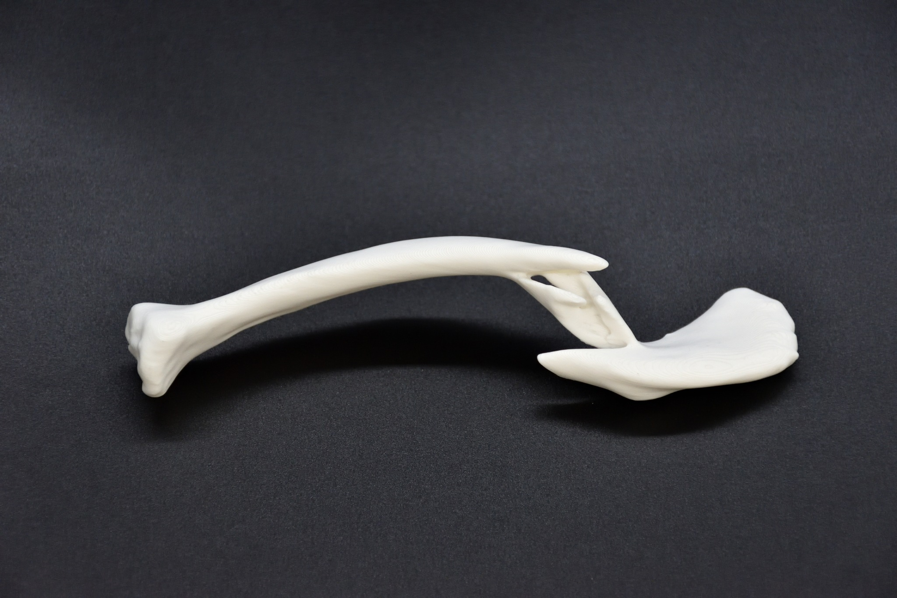
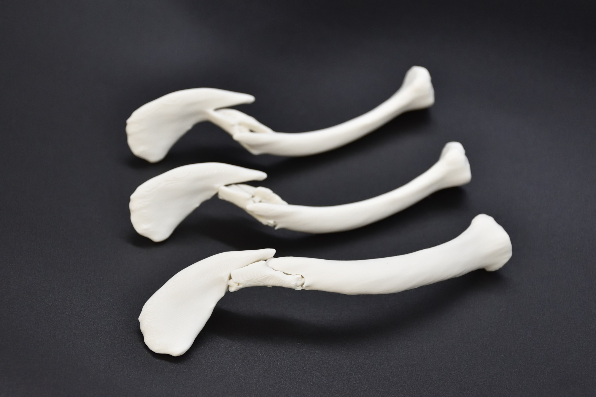
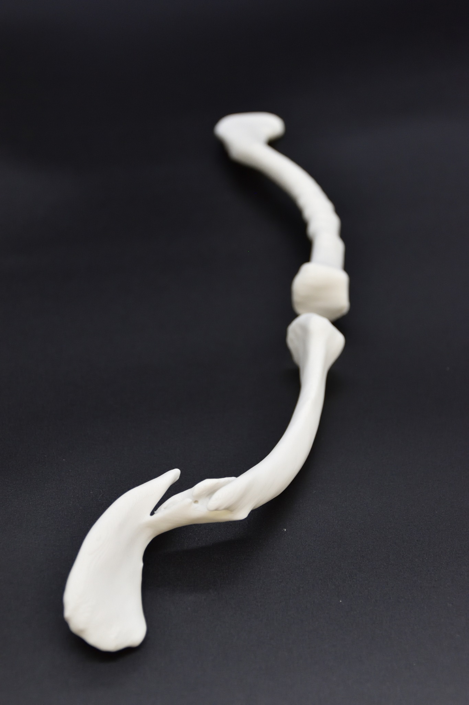
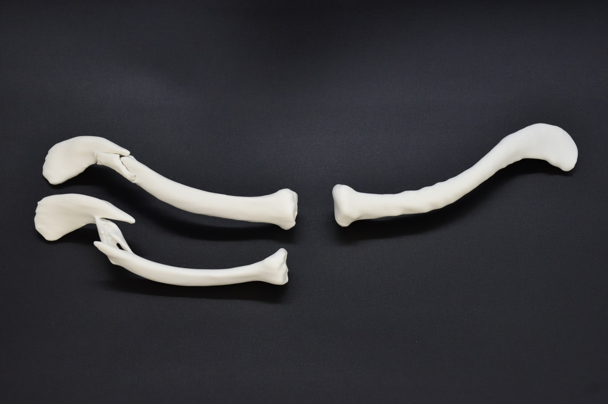
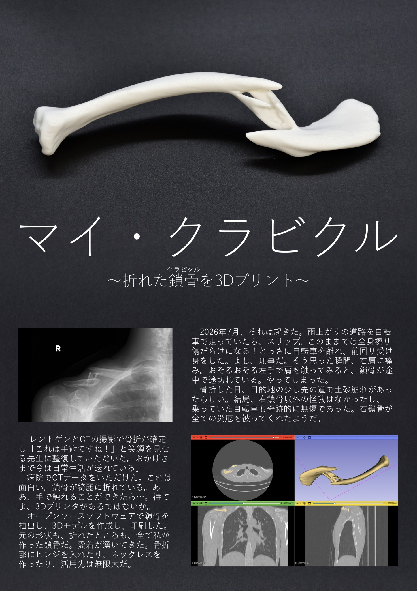

マイ・クラビクル
骨折した鎖骨を3Dプリント (2026)
2026年7月に自転車で転倒し、右鎖骨を骨折しました。マイ・クラビクルは、その時に撮影したCTデータから3Dモデルを作り、3Dプリンタで印刷したものです。右鎖骨が4つほどの骨片に分かれてしまっている様子がよくわかります。折れた部分にヒンジをつけて、整復(ずれた骨を正しい位置に戻すこと)を行えるパズルにもしました。
2026年8月現在、手術で整復していただき、療養中です。





